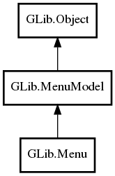

Menu
Object Hierarchy:

Description:
public class Menu :
MenuModel
Namespace: GLib
Package: gio-2.0
Content:
Constants:
Creation methods:
Methods:
- public void append (string? label, string? detailed_action)
- public void append_item (MenuItem item)
- public void append_section (string? label, MenuModel section)
- public void append_submenu (string? label, MenuModel submenu)
- public void freeze ()
- public void insert (int position, string? label, string? detailed_action)
- public void insert_item (int position, MenuItem item)
- public void insert_section (int position, string? label, MenuModel section)
- public void insert_submenu (int position, string? label, MenuModel submenu)
- public void prepend (string? label, string? detailed_action)
- public void prepend_item (MenuItem item)
- public void prepend_section (string? label, MenuModel section)
- public void prepend_submenu (string? label, MenuModel submenu)
- public void remove (int position)